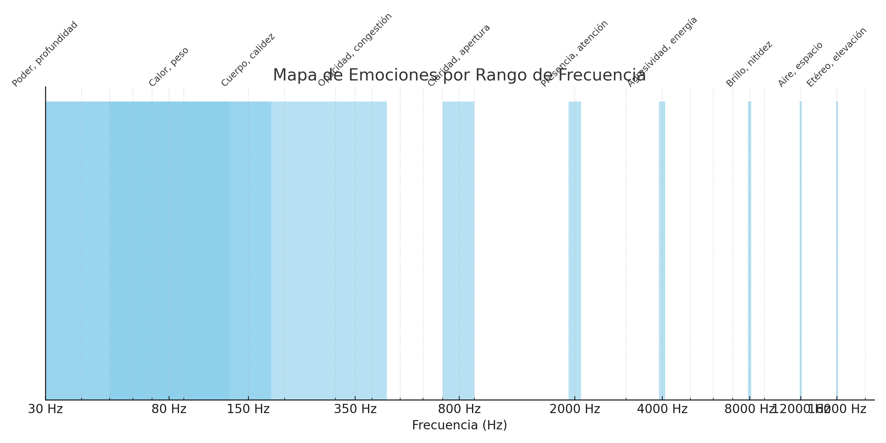

Music Knobs - Guía de Ecualización
Tips, filosofía y herramientas interactivas para mezclar con intención
Tips, filosofía y herramientas interactivas para mezclar con intención
Ecualizar no se trata solo de mover perillas ni de seguir fórmulas preestablecidas. Es un arte basado en la escucha, la intención creativa y el respeto por la naturaleza de cada sonido. A través de la ecualización moldeamos la percepción, esculpimos el espacio sonoro y creamos sensaciones. En Music Knobs creemos que cada ajuste debe tener un propósito: limpiar, realzar, o conectar emocionalmente con quien escucha. No se trata de qué tanto boosteas o cortas, sino de saber por qué lo haces, cuándo dejar que algo respire y cuándo tallar para que brille. Esta página y herramienta son para compartir ese conocimiento, con fundamentos técnicos y psicoacústicos, pero también con intuición y experiencia musical. Porque al final, la mejor mezcla... es la que se siente.
Escribe un instrumento o elemento de mezcla para ver consejos de ecualización:
Ecualizar no es solo mover frecuencias. Es entender cómo el oído humano percibe el sonido, y más importante aún, cómo ese sonido nos hace sentir. Ahí entra la psicoacústica: la ciencia que estudia cómo interpretamos lo que escuchamos, más allá de lo que realmente está sucediendo en el espectro de frecuencias.
Por ejemplo, no necesitas tanto grave para sentir impacto si potencias bien los medios bajos (100–200 Hz). Un pequeño realce en los 3 kHz puede hacer que una voz “te hable al oído”. Y cortar en los 500 Hz puede quitarle peso muerto a una mezcla y hacerla más ligera emocionalmente.
La psicoacústica te recuerda que no se trata solo de lo que suena, sino de cómo ese sonido se experimenta. Muchas veces, una decisión de EQ bien pensada puede cambiar por completo el mood de una canción.
¿Quieres algo íntimo? Recorta agudos y sube un poco los medios bajos. ¿Buscas claridad? Limpia los 300–500 Hz y levanta un poco en los agudos. ¿Energía? Dale a los 2–5 kHz. ¿Calor? Usa con cariño los 200 Hz. ¿Profundidad? Unos subgraves suaves harán el trabajo.
Ecualizar con psicoacústica es mezclar con intención emocional. Es traducir vibraciones en sensaciones. Es saber que una curva puede tocar algo dentro de quien escucha.
Esta gráfica muestra cómo distintas frecuencias pueden evocar sensaciones o emociones específicas. Es útil para ecualizar con intención emocional, no solo técnica.
Explora más contenido, herramientas y recursos creados por mí: